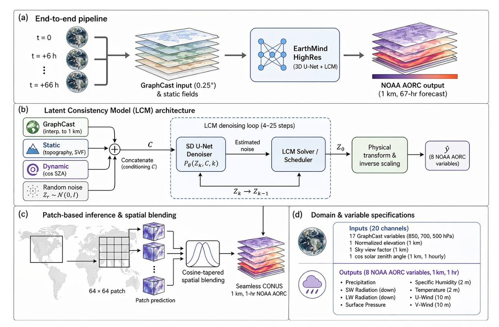
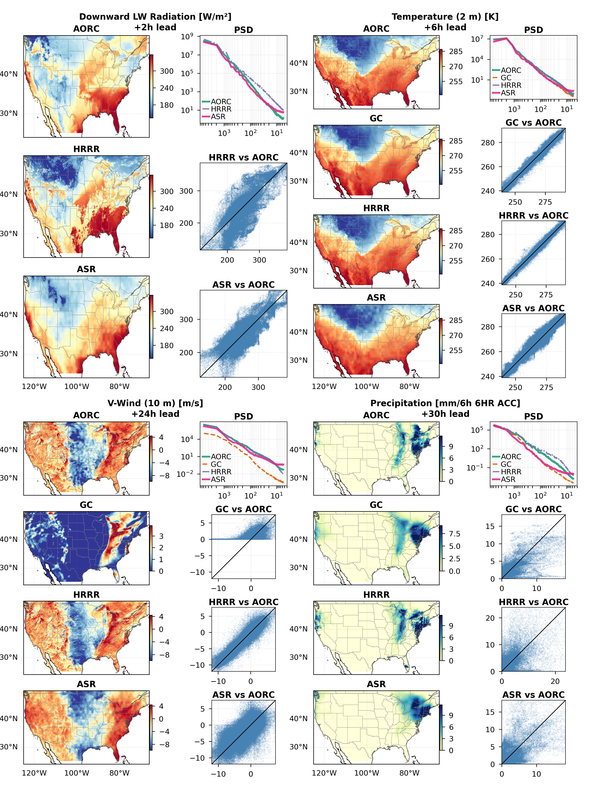

A diffusion-based foundation model downscaling global 0.25° forecasts to 1 km hourly fields of eight coupled near-surface variables over a 67-hour window.
AI weather models now match operational forecasts at 25 km resolution, yet the kilometer-scale fields needed for renewable energy, agriculture, hydrology, and disaster response remain the exclusive domain of expensive convection-permitting numerical weather prediction (NWP). We introduce AiRCast-SR, a diffusion-based foundation model that downscales global 0.25° GraphCast forecasts to 1 km hourly fields of eight coupled near-surface variables over a 67-hour window.
Trained on a single calendar year of NOAA Analysis of Record for Calibration (AORC) data over the contiguous United States using patch-based supervision, the model resolves mesoscale structure verified by spectral analysis, maintains near-zero systematic bias, and generalises zero-shot to India and Germany without retraining. AiRCast-SR reaches comparable skill to the operational High-Resolution Rapid Refresh (HRRR) on commodity GPUs — establishing a scalable, open-weights foundation for kilometer-scale weather services.
The first AI weather model combining global scope, 1 km resolution, hourly cadence, and commodity-GPU deployment.
Generates 1 km hourly fields — a 28× spatial refinement over 0.25° GraphCast input — resolving valley cold pools, lake-effect gradients, and terrain-modulated contrasts.
Patch-based foundation training enables deployment over arbitrary domains worldwide without retraining — verified over India (r = 0.88) and Germany with near-zero bias.
All eight near-surface variables — temperature, humidity, winds, pressure, radiation, precipitation — produced jointly in a single forward pass.
Full CONUS 67-hour 8-variable forecast in minutes on a single NVIDIA A100 or comparable GPU. Utilizes 4–25 LCM denoising steps.
AiRCast-SR employs a 3D U-Net denoiser within a Latent Consistency Model (LCM) diffusion framework. The 3D architecture jointly processes spatial (1 km) and temporal (hourly) dimensions, maintaining physical coherence across all eight output variables and 67 forecast hours.
Twenty conditioning channels — 17 GraphCast atmospheric fields at three pressure levels, normalised topography, sky-view factor, and the cosine of solar zenith angle — drive the downscaling. The LCM objective compresses iterative diffusion sampling into 4–25 consistency steps, enabling full-CONUS inference in minutes.
| Backbone | UNet3DConditionModel (HuggingFace) |
| Input channels | 28 (8 target + 20 conditioning) |
| Output channels | 8 near-surface variables |
| Diffusion schedule | 1000 training timesteps |
| Inference steps | 4 – 25 LCM solver steps |
| Patch size (infer) | 256 × 256 · 50% overlap |

Evaluated on three CONUS case studies against AORC reference truth, operational HRRR (3 km), and raw GraphCast input.
A continental-scale cold-air outbreak with arctic front and blizzard conditions. AiRCast-SR effectively resolved mesoscale thermal structures below the −9°C de-icing threshold.
Mesoscale convective systems over the central US. AiRCast-SR outperforms HRRR beyond 12-hour lead on precipitation (r = 0.39–0.43 vs HRRR r = 0.09–0.26).
Synoptic-scale frontal passage during spring transition, demonstrating AiRCast-SR across a broad dynamical regime spanning temperature and precipitation extremes.

AiRCast-SR's power spectral density tracks the AORC reference from 1000 km down to 10 km wavelengths for temperature — while GraphCast rolls off sharply below 100 km. This spectral realism is the operational signature required for downstream hydrological, energy-system, and hazard-nowcasting applications.
Without any retraining, AiRCast-SR was evaluated against StationBench surface observations over two climatologically distinct regions.
A striking result for a model trained exclusively on CONUS data. AiRCast-SR resolves Himalayan cold-temperature signals and Indo-Gangetic thermal gradients at 1 km resolution with near-zero bias.
Central Europe has weaker orographic gradients—informatively, skill is lower here than over India. This confirms that AiRCast-SR has learned topographic forcing as a transferable physical relationship.
Download the open-source model weights directly from our Hugging Face repository. Ready for immediate deployment and fine-tuning.
Model Weights →Training scripts, evaluation pipeline, and architecture definitions for AiRCast-SR. Fully open-source on GitHub.
GitHub Repository →Trained using 1 km hourly AORC data as the high-resolution ground truth, conditioned on 0.25° GraphCast reforecasts from Google DeepMind.
Access Data →Working at the intersection of artificial intelligence and atmospheric science to build next-generation climate technologies.
Lab Website →@article{luitel2025aircastsr, title = {A Diffusion-Based Foundation Model for Global Kilometer-Scale Hourly Weather Prediction}, author = {Luitel, Somnath and Singh, Manmeet and Durkee, Joshua and Al Fahad, Abdullah and Sudharsan, Naveen and Singh, Prabhjot and He, Cenlin and Kamath, Harsh and Yang, Zong-Liang and Srivastava, Amit Kumar and Halder, Krishnagopal and Juneja, Sandeep and Mukhopadhyay, Parthasarathi and Dhanuka, Saptarishi}, journal = {Nature (under review)}, year = {2025}, url = {https://github.com/Air-Lab-WKU/AiRCast-SR}, note = {AiRCast-SR; open-weights foundation model for kilometer-scale weather downscaling} }